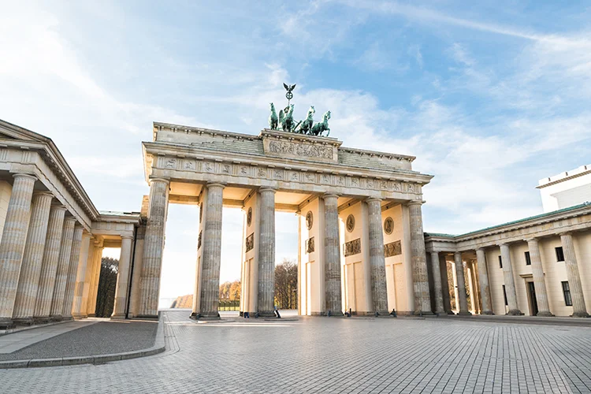
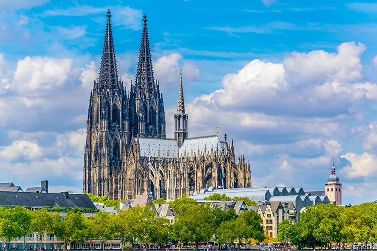
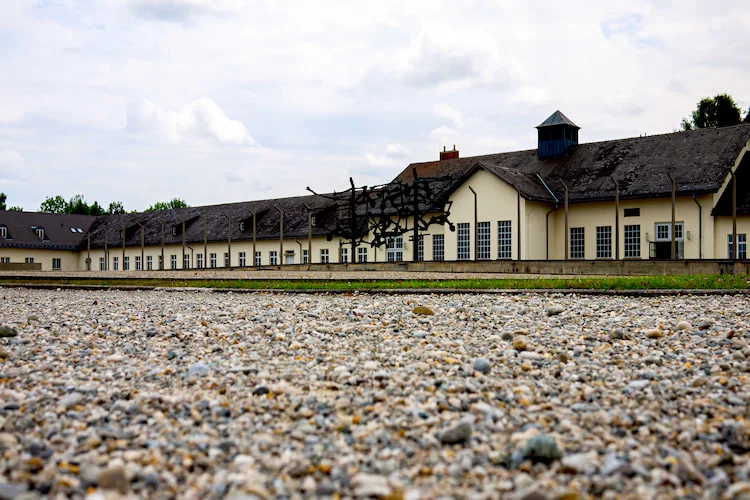
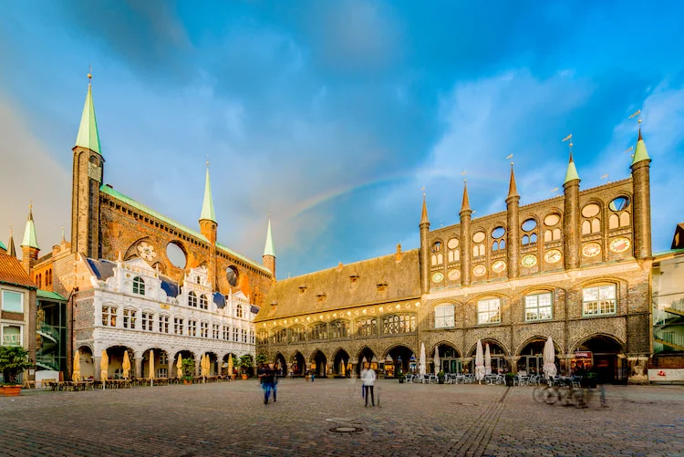
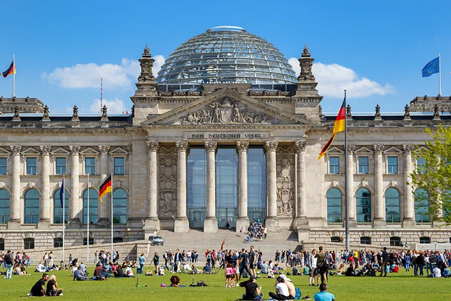

1. Brandenburg Gate

The Brandenburg Gate is a famous landmark in Berlin built between 1788 and 1791 which once served as a city gateway. Commissioned by King Frederick William II of Prussia it stood in the entrance to boulevard Unter den Linden, which led to the city palace. The gate was reopened on December 22, 1989, in the course of the reunification of East and West Berlin, when West German Chancellor Helmut Kohl walked through it to meet East German Prime Minister Hans Modrow. Following the fall of the Berlin Wall, the Brandenburg gate became a symbol of German reunification.
2. Cologne Cathedral

Cologne Cathedral (Kölner Dom) is a vast and impressive gothic cathedral which took over 600 years to complete. Visible from nearly every point in the city, it is the second highest building in Cologne. Located on what was previously the site of a Roman villa, thought to have dated back to the 4th century – as well as several increasingly larger churches – construction of the current Cologne Cathedral began in 1248.
3. Dachau Concentration Camp

Dachau Concentration Camp (KZ-Gedenkstätte Dachau) was one of the first of many concentration camps set up by the Nazis to imprison and murder certain groups as part of their campaign of genocide. Today, the site of Dachau Concentration Camp houses a memorial to those who suffered and perished under the Nazis: expect to spend at least half a day here to take everything in and digest it.
4. Lubeck Town Hall

Lübeck Town Hall (Lübecker Rathaus) is an incredible medieval structure which began as a 13th century cloth hall. One of Germany’s most famous brick Gothic buildings, Lübeck Town Hall was added to over the centuries. Even today, Lübeck’s Town Hall continues to serve as the city’s administrative headquarters and meeting place of the city parliament. The halls are open to visit by guided tours, a highlight being the splendid Audience Hall, decorated in the lush Rococo style of 1755 depicting the virtues of a good government.
5. Reichstag
